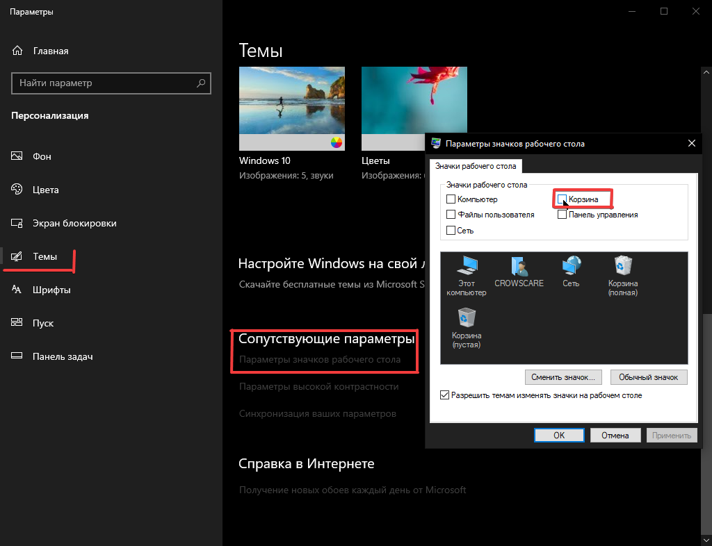

Корзина трее MiniBin
Для начала нам нужно убрать корзину с рабочего стола. Для того, чтобы это сделать переходим в:
Параматеры - Персонализация - Темы - Листаем ниже, в пункте Сопутствующие параметы переходим в Параметры значков рабочего стола и снимаем галочку с корзины.
Параматеры - Персонализация - Темы - Листаем ниже, в пункте Сопутствующие параметы переходим в Параметры значков рабочего стола и снимаем галочку с корзины.

Далее нужно скачать MiniBin (Ссылка внизу гайда).
После установки на панели задач появится значок корзины, который можно переместить в трей или оставить на панели. Чтобы настроить MiniBin, нажмите по значку правой кнопкой мыши и зайдите во вкладку Configure.
После установки на панели задач появится значок корзины, который можно переместить в трей или оставить на панели. Чтобы настроить MiniBin, нажмите по значку правой кнопкой мыши и зайдите во вкладку Configure.
Скачать MiniBin
Если кнопка скачивания не появилась, отключите блокировщик рекламы
Мы приносим свои извенения за рекламу, но это единственный способ существования гайдов
Мы приносим свои извенения за рекламу, но это единственный способ существования гайдов